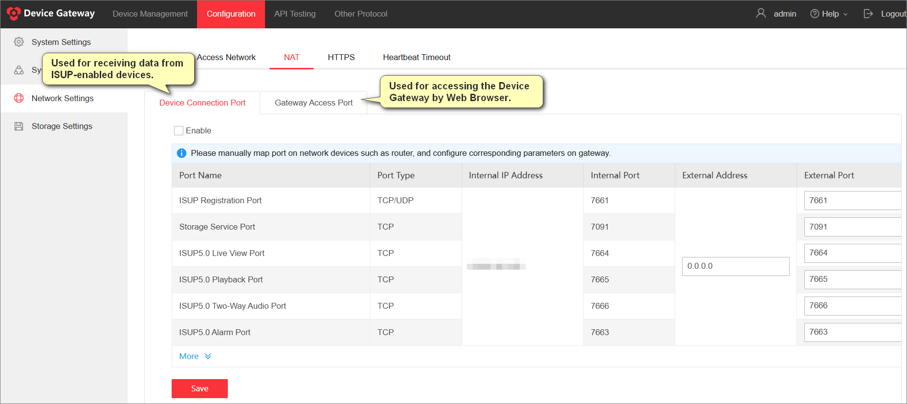

You can add and manage ISUP-enabled encoding devices and
ISUP5.0/ISAPI-enabled access control devices for intergration with third-party platforms.
This topic will guide you through adding encoding devices.
-
Configure the port mapping to ensure the device is connected normally.
-
Select .
-
Configure the external port to ensure the ports of the Device Gateway
and those of your network devices are consistent.

Figure 1 Port Mapping
Note
We recommend 15000-17000 for the external ISUP2.0
stream port.
-
Add devices in the following ways.
-
For ISUP5.0-enabled devices in the pre-registered device list, select
Add to Device ListAdd to Device
List, and enter the key.
-
To manually add devices, select Add, set the
adding mode and protocol type, and configure other parameters.
Note
If you manually add the devices in the pre-registered device
list, these devices will be removed from the pre-registered device list
when they are added.
Select a device to check if the available APIs work well. For details,
see Step 3: Test APIs.